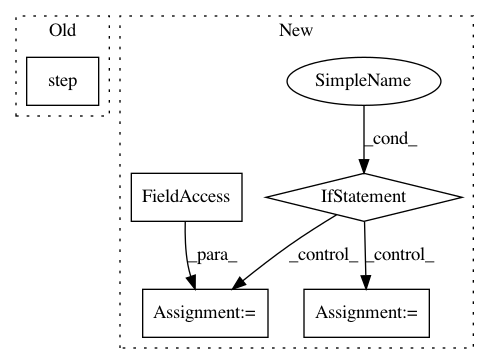

415be78cc0d1275a29d0ceda550d0d7a7a5224ea,python/ray/util/sgd/torch/training_operator.py,TrainingOperator,train_batch,#TrainingOperator#Any#Any#,202
Before Change
// Call step of optimizer to update model params.
with self.timers.record("apply"):
self.optimizer.step()
return {"train_loss": loss.item(), NUM_SAMPLES: features[0].size(0)}
def validate(self, val_iterator, info):
After Change
raise RuntimeError("Either set self.model in setup function or "
"override this method to implement a custom "
"training loop.")
if not hasattr(self, "optimizer"):
raise RuntimeError("Either set self.optimizer in setup function "
"or override this method to implement a custom "
"training loop.")
if not hasattr(self, "criterion"):
raise RuntimeError("Either set self.criterion in setup function "
"or override this method to implement a custom "
"training loop.")
model = self.model
optimizer = self.optimizer
criterion = self.criterion
// unpack features into list to support multiple inputs model
*features, target = batch
// Create non_blocking tensors for distributed training
if self.use_gpu:
In pattern: SUPERPATTERN
Frequency: 3
Non-data size: 5
Instances
Project Name: ray-project/ray
Commit Name: 415be78cc0d1275a29d0ceda550d0d7a7a5224ea
Time: 2020-09-08
Author: amogkam@users.noreply.github.com
File Name: python/ray/util/sgd/torch/training_operator.py
Class Name: TrainingOperator
Method Name: train_batch
Project Name: HyperGAN/HyperGAN
Commit Name: 5a69007e1ab2f4c0b4a549c0a2a8cd9701fd8929
Time: 2017-06-28
Author: mikkel@255bits.com
File Name: examples/colorizer.py
Class Name:
Method Name: search
Project Name: allenai/allennlp
Commit Name: 5ad7a33a04d8829ad3439b5f9390bd136105f986
Time: 2020-05-28
Author: tobiasr@allenai.org
File Name: allennlp/nn/beam_search.py
Class Name: BeamSearch
Method Name: search